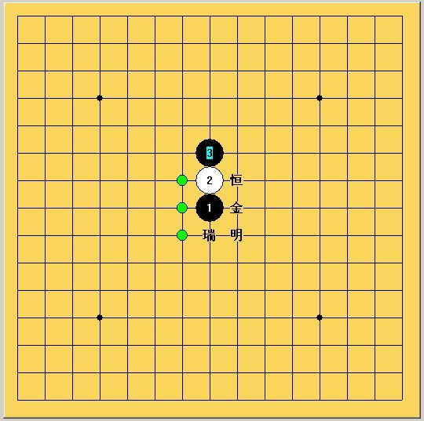
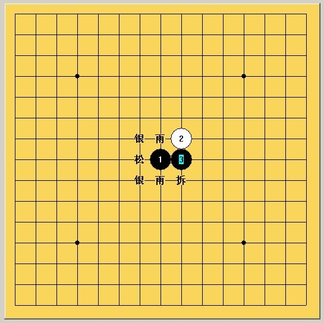
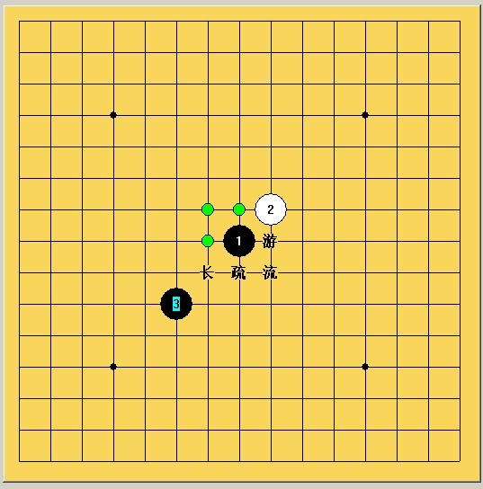

由五行所想到的
#1 由五行所想到的 作者：三国老凯 发表时间：2011-1-4 21:46:27
最近看网络小说有点多了。金木水火土，对应儒学的仁义礼智信，缺一不可，相生即相克。同时，南方属于火，东方属于木，北方属于水，西方属于金，土掌管中，协助金木水火的平衡。所以都说“买东西”不说“买南北”，实是买“金、木”，不买“水、火”。
就开始YY了，咱五子棋也有个五。这五行代表什么呢？
开局？棋手流派？哥如果是水命适合学水月吗？
［ 茗弈宽容 于 2011-1-5 11:13:06 时花20金币送鲜花一朵］
#2 Re:由五行所想到的 作者：消逝的雨 发表时间：2011-1-4 22:55:30
老凯呀，有空你一定要研究下，这理论很先进啊
#3 Re:由五行所想到的 作者：小帮帮 发表时间：2011-1-5 0:03:16
你懂的，不解释#4 Re:由五行所想到的 作者：茗弈宽容 发表时间：2011-1-5 11:13:34
有点意思#5 Re:Re:由五行所想到的 作者：岳麓小棋后 发表时间：None
连珠26个开局可以分为5个部分：
1、寒恒金明瑞为一个系统，姑且称为“金”系（“梅花香自古寒来”，黄金作为一般等价物，有其永恒的一面，也是祥瑞的象征物）

2、 云雨银松为一个系统——木系（典型的木系嘛，所谓水生木）

3、彗游流疏长为一个系统——水系（这么多三点水该是水系吧，疏苗-成长）
by:web版  IP：
已记录
IP：
已记录
#6 Re:由五行所想到的 作者：失落刀 发表时间：2011-1-5 18:36:19
虽然没看太懂，但还是相信有一定道理。岳麓小棋后也把26妖刀分类下。#7 Re:由五行所想到的 作者：日月丽天 发表时间：2011-1-7 10:03:29
黑子代表阴，白子代表阳，一阴一阳谓之道。#8 Re:由五行所想到的 作者：安娜制作所 发表时间：2011-1-7 13:43:43
天机勿泄#9 Re:由五行所想到的 作者：三国老凯 发表时间：2011-1-7 23:10:36
看不懂棋后的意思 能不能详细点呢？#10 Re:Re:由五行所想到的 作者：岳麓小棋后 发表时间：2011-1-8 18:28:21
照这情形，26妖刀看来要用八卦来解释了
26=2×（5+8）
2代表阴阳，5、8代表五行八卦
注：以上纯属附会！
［ 三国老凯 于 2011-1-8 21:18:06 时花20金币送鲜花一朵］
［ 左伟光 于 2011-1-21 11:39:41 时花20金币送鲜花一朵］
#11 Re:由五行所想到的 作者：与郎共五 发表时间：2011-1-8 18:47:17
棋后的知识面和想象力如广茂草原。#12 Re:由五行所想到的 作者：日月丽天 发表时间：2011-1-8 19:29:00
五子棋称亦为“连五子”或“连珠”，源于史书中“日月如合璧，五星如连珠”。#13 Re:Re:Re:由五行所想到的 作者：三国老凯 发表时间：2011-1-8 21:17:49
引用：
原文由 岳麓小棋后 发表于 2011-1-8 18:28:21 :照这情形，26妖刀看来要用八卦来解释了
棋后强悍~
26=2×（5+8）
2代表阴阳，5、8代表五行八卦
注：以上纯属附会！